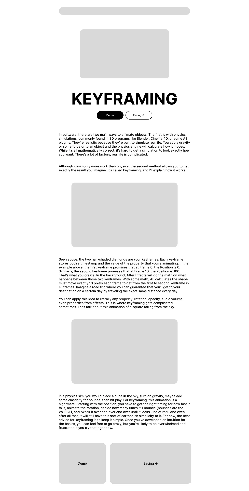
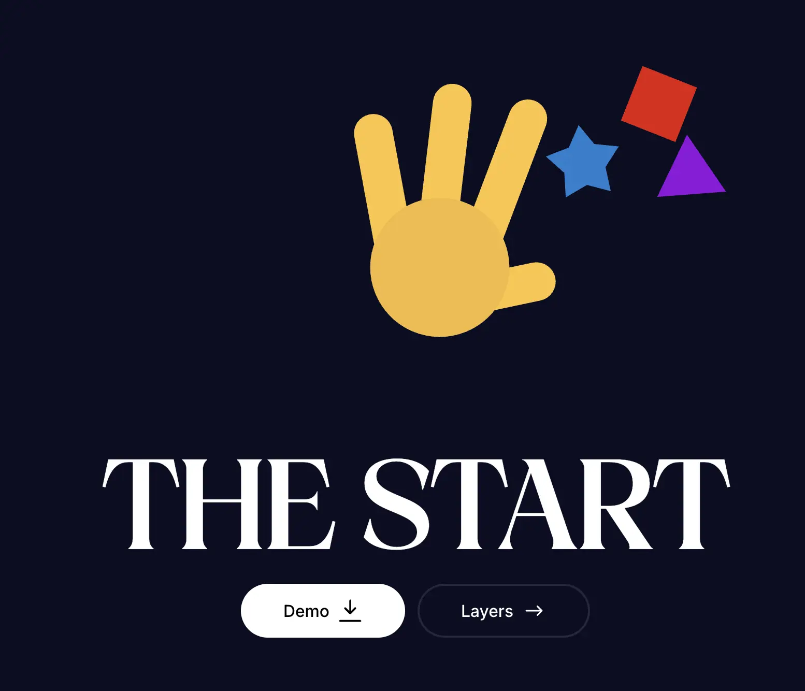
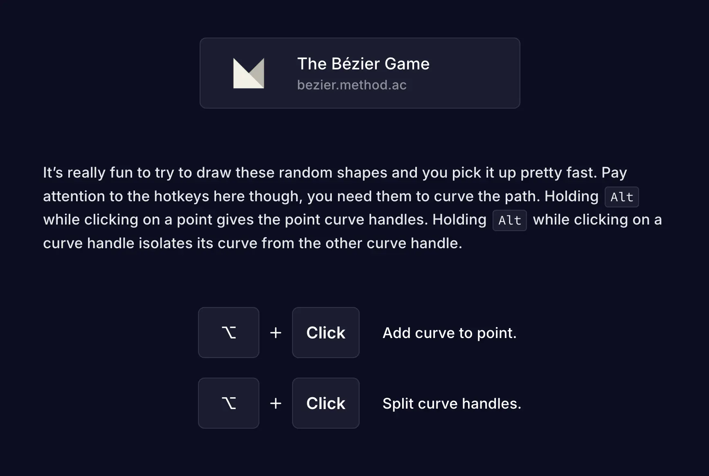
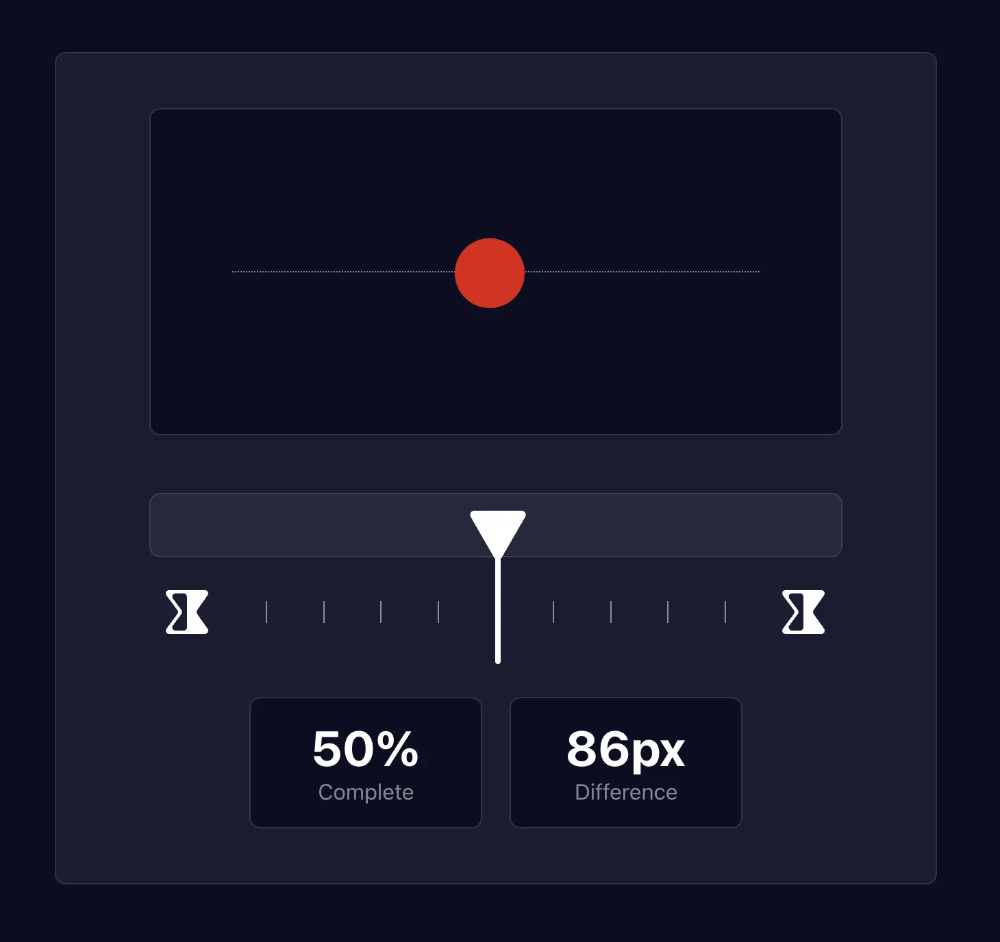
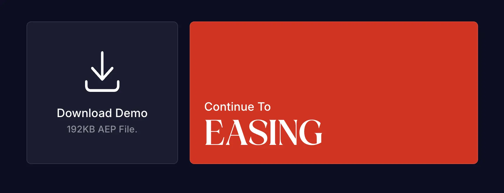
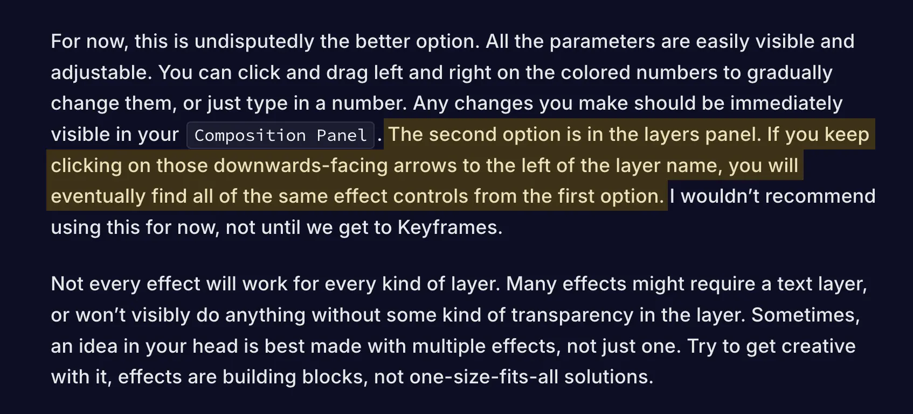
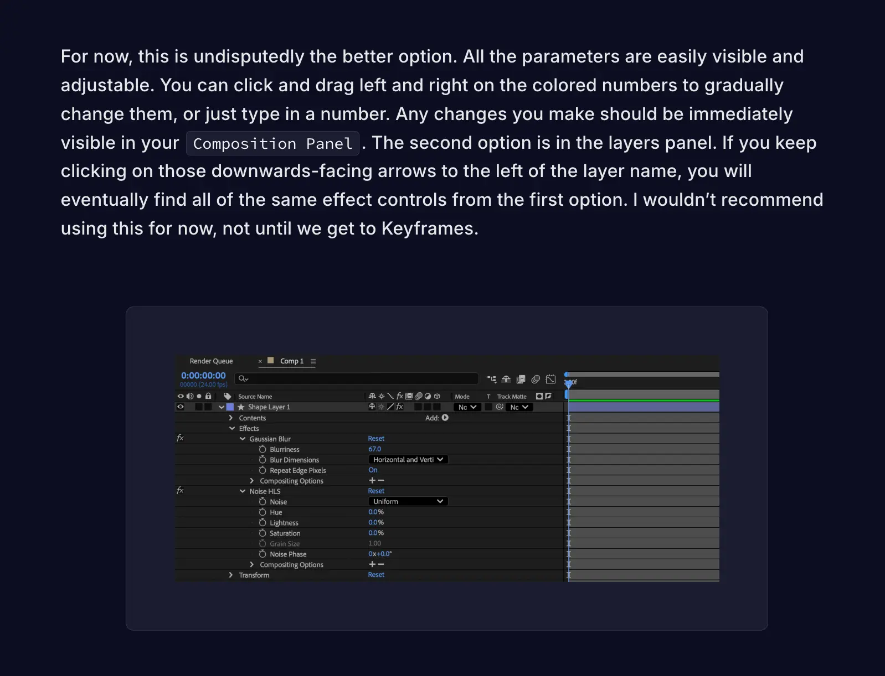
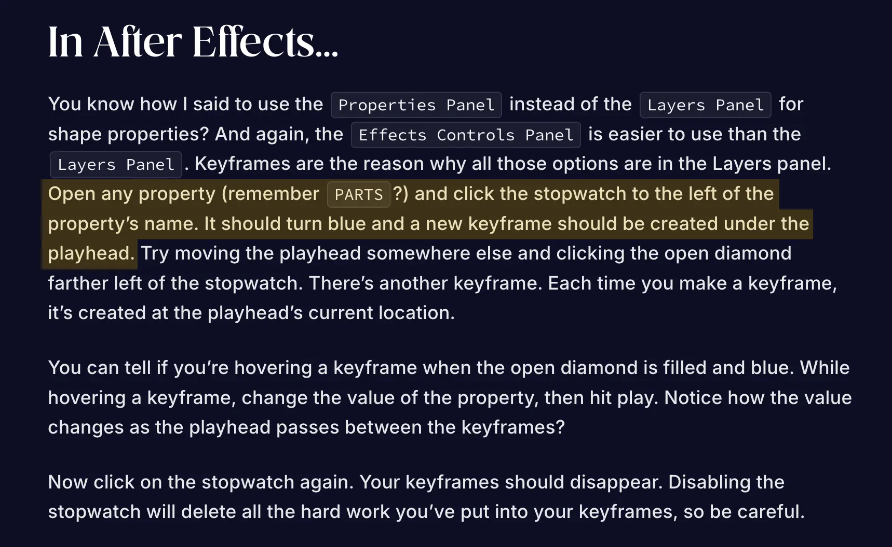
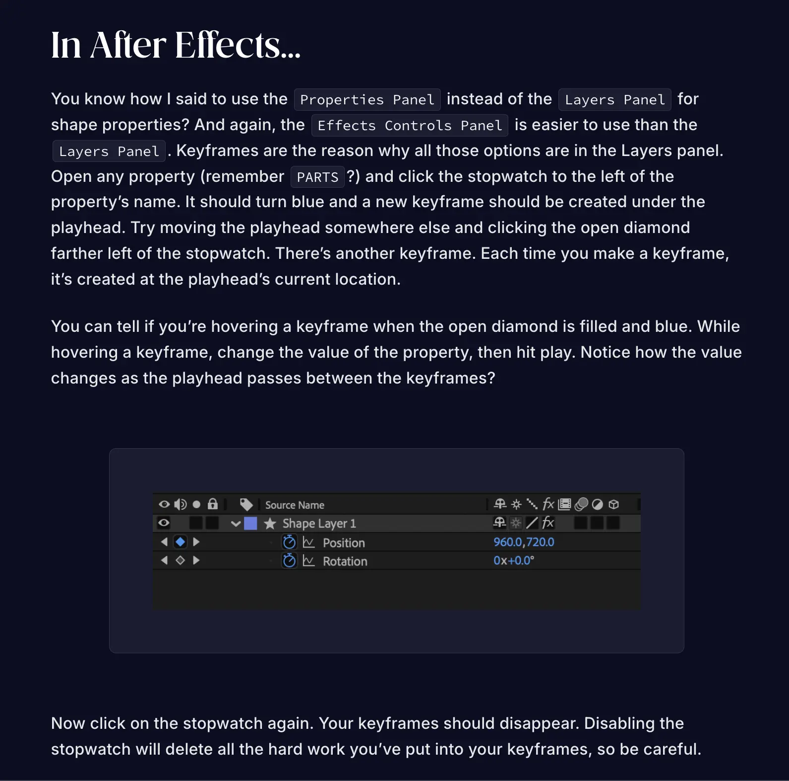

LearnAE
Aug 2026
Goal & Constraints
Adobe After Effects (AE) is 2D motion graphics and VFX compositing software. It’s also really difficult to learn. I wanted to build an interactive website that would give new learners some ground to stand on when starting their After Effects journey.
The problem with After Effects is its complexity. I can’t assume my users have any prior experience with After Effects or even with 2D creative software.
Initial Direction
The original idea for the site was to teach with a deep understanding. It’s easier and more interesting for some people to learn when they’re taught the concept from top to bottom. I would go through abstract ideas like Blending Modes, which to many seem like fancy names that make funny-looking filters, as intricate explanations of the math behind those filters. Math can be fun too, I thought.
I posted on different AE forums about my idea, really just to see if it was something that people had a need for. From the comments on Reddit and Creative Cow, people definitely thought it was an interesting concept, but some were confused on who exactly the platform would be for. If I planned on having users with the absolute bare minimum experience of using a file-folder system on their computers, my programming-level explanations of algorithms would be meaningless and boring to them.
New Direction
With the help of those comments, I came up with a new plan. Still teaching After Effects to brand new users, but adapting from the current system of learning. From my experience, you can finish an introductory video after two hours and realize you still know nothing. After Effects is an incredibly powerful tool that requires hands-on learning. All I have to do is sandbox it.

I decided on a fairly linear website so that users weren't responsible for deciding what to learn next. Each skill would introduce a concept that became useful later in the course. The concepts (apart from the intro and ending) would include a written guide about how it works alongside a downloadable After Effects project file with a hands-on task inside.
Feedback
I handed off an early version of the site to a few of my friends to navigate without any assistance. They found the interface itself quite intuitive but had a couple issues when it came to the actual content.
There was a lot of unbroken text. I’d done my best to split ideas into different paragraphs, but if you open a site that teaches creative software, your introduction to the platform shouldn’t be a wall of text. The curse of knowledge was another issue. There are so many tiny details that come natural to me as an AE user for the last few years but are foreign to someone brand new. I was unintentionally writing for someone who already understood the concepts.
I had also spent a lot of my time experimenting with Lottie animations. I originally only intended to use animations for the interactive parts of the website, but getting a bit carried away, I also spent time animating icons, buttons, and intro graphics. I’m proud of the way the website looks with these animations, but testing showed that users largely ignored them and that they weren't contributing to the learning process. I had to separate motion that made the interface more engaging from motion that actually helped communicate an idea.
Final Product




From the user testing, I reviewed the website copy for the knowledge gap inconsistencies. I added more images to better describe the concepts from the text (with the added effect of breaking up text). This included things like screenshots of where menu settings can be found and screenshots of icons instead of long descriptions of what the icons looked like. The animations were also adjusted to be a bit less flashy. Here’s some before and after comparisons:




In terms of the actual tools used, this is the obligatory rundown. The wireframes and hi-fi designs were built in Figma, then translated to React with Figma’s Builder.io plugin. Most components were effectively rebuilt to account for mobile resizing. Every complex animation was made in After Effects, then exported to Lottie files through Bodymovin. Once everything was built, a GitHub Action built and deployed the Vite project.
One of the biggest lessons that I got from this project was that teaching a complex tool isn't about explaining every tiny nuance. It's about giving beginners the right to information to allow experimenting with it themselves. They shall do what thou wilt.